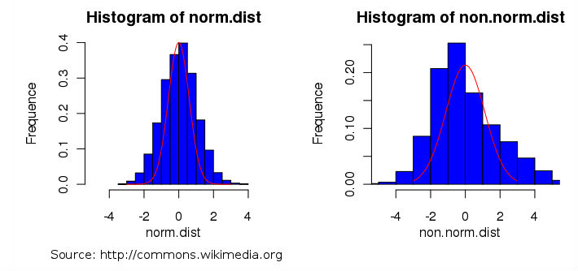
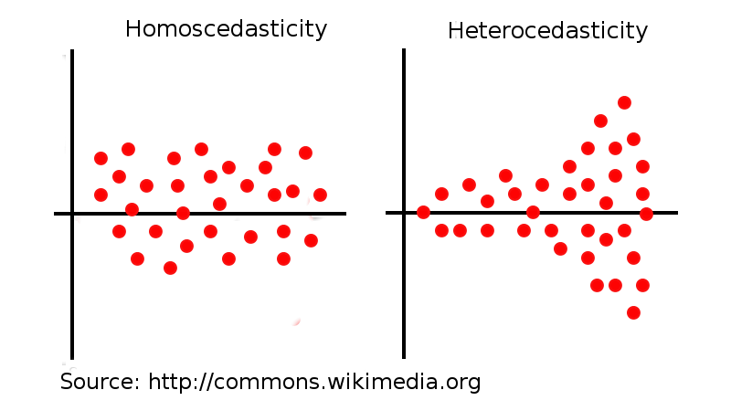

Para la ejecución de los tests paramétricos se deben cumplir tres condiciones:
Normalidad: Las muestras o datos obtenidos por los algoritmos siguen una distribución normal. Ejemplo:

Independencia: Las muestras o datos obtenidos por los algoritmos no dependen de unas de otras (asumida por el usuario).
Homocedasticidad: Es la condición que dice que las poblaciones de entrada o datos obtenidos por los algoritmos proceden de poblaciones con varianzas iguales. El caso contrario sería heterocedasticidad.

En las siguientes pestañas "Normalidad" y "Homocedasticidad" puedes encontrar los diferentes tests para evaluar estas condiciones sobre los datos.
Hipótesis nula (H0): Todas las poblaciones de entrada proceden de poblaciones con varianzas iguales.
¡Sube un fichero! A la derecha de la barra la barra de navegación superior puedes seleccionar y
subir un fichero en "Subir fichero". A continuación, pulsa en "Consultar fichero" para ver su contenido.
¡Sube un fichero! A la derecha de la barra la barra de navegación superior puedes seleccionar y
subir un fichero en "Subir fichero". A continuación, pulsa en "Consultar fichero" para ver su contenido.